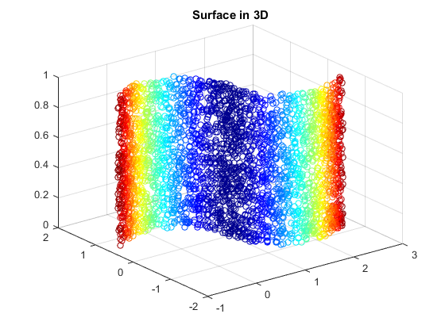
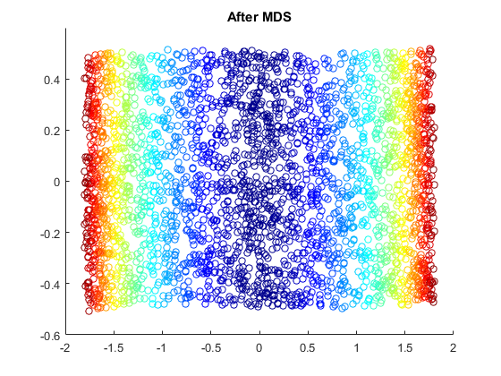
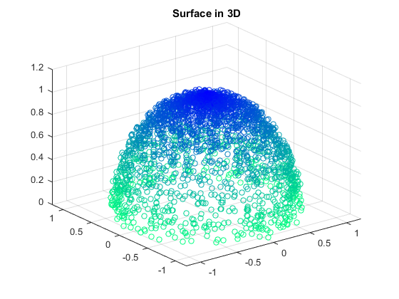
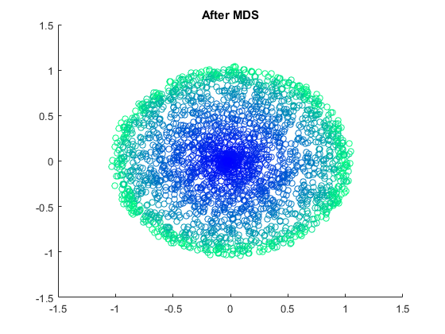

Example 03 Using MDS in Demension Reduction of Some Surface
- 2 example with result and errors
- huge error on edges or points with large curvature
- average error no more than 10%
Contents
Create DATA
if (exist('my_surfaces.mat', 'file') ~= 2)
mark_size = 32;
len = 1000;
theta = 0.5 * pi * rand(len, 1);
r = (0.95 + 0.1 * rand(len, 1));
x = [r(1 : len / 2) .* cos(0.5 * pi + 0.5 * theta(1 : len / 2));
r .* cos(theta); r .* cos(pi + theta) + 2;
r(1 : len / 2) .* cos(1.5 * pi + 0.5 * theta(1 : len / 2)) + 2];
y = [r(1 : len / 2) .* sin(0.5 * pi + 0.5 * theta(1 : len / 2));
r .* sin(theta); r .* sin(pi + theta);
r(1 : len / 2) .* sin(1.5 * pi + 0.5 * theta(1 : len / 2))];
z = rand(3 * len, 1);
val = (x - 1) .* (x - 1) + y .* y;
surface_1 = [x, y, z, val];
len = 50;
phi = 0.5 * pi * rand(len, len);
theta = 2 * pi * rand(len, len);
Phi = phi(:); Theta = theta(:);
r = 0.95 + 0.1 * rand(len, len); r = r(:);
x = r .* sin(Phi) .* cos(Theta);
y = r .* sin(Phi) .* sin(Theta);
z = r .* cos(Phi);
val = Phi;
surface_2 = [x, y, z, val];
save('my_surfaces.mat', 'mark_size', 'surface_1', 'surface_2');
else
load('my_surfaces.mat');
end
Plot Surface A: Circle-like Surface
x = surface_1(:, 1);
y = surface_1(:, 2);
z = surface_1(:, 3);
val = surface_1(:, 4);
d_origin = pdist([x, y, z]);
[YY, e] = mds(d_origin, 2);
d_mds = pdist(YY);
err = abs(d_mds - d_origin) ./ bsxfun(@plus, d_origin, 1e-8);
err_max = max(err); err_avg = mean(err);
figure(1); colormap('jet');
scatter3(x, y, z, mark_size, val);
title('Surface in 3D');
saveas(gcf, 'example03-1', 'png');
figure(2); colormap('jet');
scatter(YY(:, 1), YY(:, 2), mark_size, val);
ylim([-0.6, 0.6]); title('After MDS');
saveas(gcf, 'example03-2', 'png');
fprintf('Surface A: Circle-like Surface\n');
fprintf(' Eigenvalue e = [%f, %f]\n', e(1), e(2));
fprintf(' Maximum Error Ratio = %4.2f%%\n', err_max * 100);
fprintf(' Average Error Ratio = %4.2f%%\n', err_avg * 100);
Surface A: Circle-like Surface
Eigenvalue e = [3933.383573, 250.786951]
Maximum Error Ratio = 99.48%
Average Error Ratio = 6.44%
 
Plot Surface B: Half-Sphere
x = surface_2(:, 1);
y = surface_2(:, 2);
z = surface_2(:, 3);
val = surface_2(:, 4);
d_origin = pdist([x, y, z]);
[YY, e] = mds(d_origin, 2);
d_mds = pdist(YY);
err = abs(d_mds - d_origin) ./ bsxfun(@plus, d_origin, 1e-8);
err_max = max(err); err_avg = mean(err);
figure(3); colormap('winter');
scatter3(x, y, z, mark_size, val);
xlim([-1.2, 1.2]); ylim([-1.2, 1.2]);
saveas(gcf, 'example03-3', 'png');
title('Surface in 3D');
figure(4); colormap('winter');
scatter(YY(:, 1), YY(:, 2), mark_size, val);
title('After MDS');
saveas(gcf, 'example03-4', 'png');
fprintf('Surface B: Half-Sphere\n');
fprintf(' Eigenvalue e = [%f, %f]\n', e(1), e(2));
fprintf(' Maximum Error Ratio = %4.2f%%\n', err_max * 100);
fprintf(' Average Error Ratio = %4.2f%%\n', err_avg * 100);
Surface B: Half-Sphere
Eigenvalue e = [622.418653, 611.885027]
Maximum Error Ratio = 98.73%
Average Error Ratio = 9.94%
 